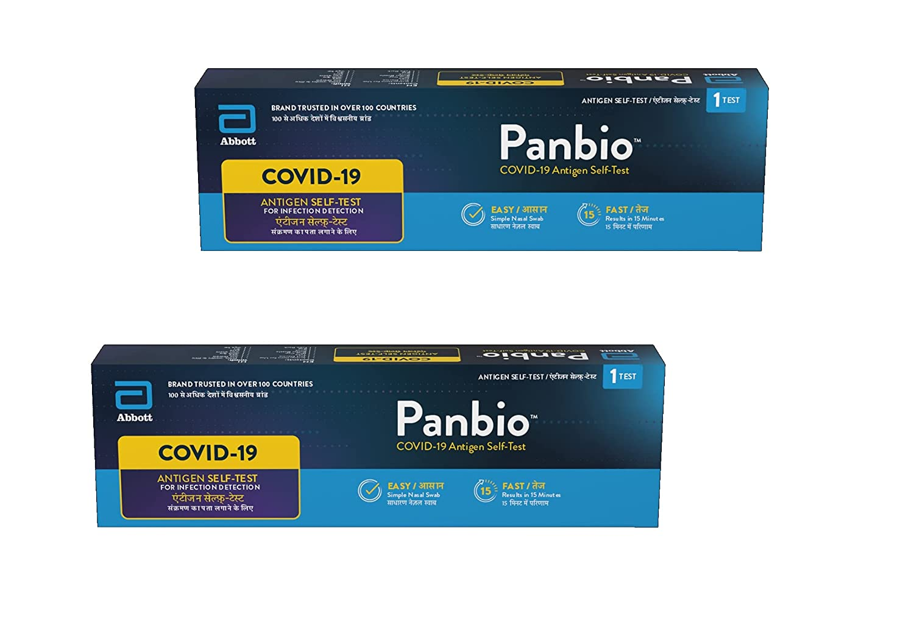

Testing is crucial to curb the spread of the pandemic. But nowadays where the virus is spreading through every single corner of the world, it can be extremely difficult to get a real COVID-19 test. Home testing kits can be a life-saver as they are available in almost every pharmacy, so now you don’t have to go through the bustle to book a COVID test. There are two main home testing kits brand: MyLab’s CoviSelf and the Panbio COVID-19 Antigen Self-Test. All the kits have been IMCR (Indian Council of Medical Research) approved, and has advised that this kit is only for those who have symptoms or are at a high risk of being in contact with COVID positive people, and will need to take a test at home.
MyLab's CoviSelf
Mylab's CoviSelf is India's first self-testing kit for COVID-19. The test comes with a pre-filled extraction tube, a biohazard bag, a sterile nose swab and a testing card.
First you need to download the CoviSelf app and enter all your details, so that the app can capture data on a secure server which is connected with the ICMR portal, where all the test reports will be available to the government. Then, before taking the test, make sure to wash your hands and sterilize the place where the kit is placed. After that insert the swab 2-4 cm inside your nose, and rub it well to collect the specimen. Swirl the swab inside of the extraction tube so that it can mix with the liquid inside, close the tube tightly, and then put two drops from the tube onto the testing card. If a person is positive, then two lines will appear on the testing card but if negative, one line appears on the card.
.jpeg)
PanBio COVID-19 Antigen Self-Test
Panbio COVID-19 Antigen Self-Test has been shown to have an accuracy rate of a person which has the virus is 93.1%. The test includes an instruction manual, one test device, one tube, one blue cap, one buffer bottle, one swab, one bag and a tube rack.
Before starting, scan the QR code on page 1 of the instruction manual to download the NAVICA app, wash your hands carefully and make sure that they are dry, then make sure that the kit is on room temperature for at least 30 minutes prior to the test. Make sure that you have removed all the components in the bag, and do not open any of the things until told so. You should also have a timing device near you.
Once that is done, keep the buffer bottle upright, twist and pull the tab to open the bottle, and squeeze the liquid from the bottle into the tube until it reaches the full line on the side of the tube, and then put it on the tube rack. After that, take out the swab and insert it straight back into your nostril about 2 cm, then slowly rotate the swab 5 times, gently rubbing it along the insides of your nasal passage, and then do the same for the other nostril. Insert the swab in the tube, then swirl in the fluid 5 or more times while pushing it against the wall of the tube. Pinch the swab tip through the tube to remove any remaining fluid, hold it firmly with one hand and lift the swab and locate the break line. Snap the swab handle at the break line and leave the swab in the tube, discarding the stick. Put the blue cap on the tube, then return it to the tube rack. Take out the test device, then check if there are any bubbles in the liquid, and if there are bubbles, then wait until it disappears. Keep the tube vertical with the white cap facing down, then remove the white cap. Squeeze five drops from the tube into the well on the test device, then put the white cap back on the tube and wait for 15 minutes. Once the 15 minutes are over, use the NAVICA app to take a photo of the test device and submit your result. The app will submit your result to IMCR and display the test result. Remember: do not read the test result earlier than 15 to 20 minutes. If a line appears on the Test (T) line or if there are no lines, then the test is invalid. If a line is present on the Control (C) line and a line on the Test line, then you are positive for COVID-19. If there is one line on the Control line, then you are negative.

References
Meriscreen COVID-19 Antigen Test Kit | Meril Life
Abbott Point of Care Testing: Rapid Diagnostics
Explained: How Mylab Coviself, the self-testing kit for Covid-19, works